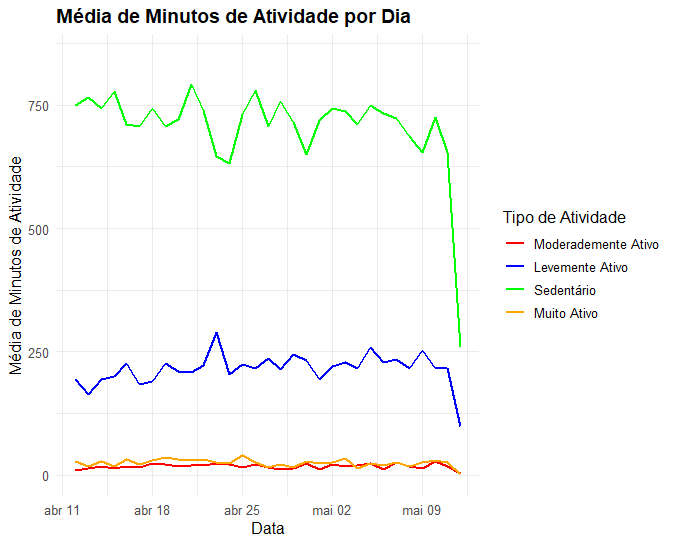

Estudo de Caso Bellabit

Resumo
Bellabeat é uma empresa de tecnologia que fabrica produtos inteligentes focados na saúde. Eles oferecem diferentes smart devices que coletam dados sobre atividade, sono, estresse e saúde reprodutiva para capacitar as mulheres com conhecimento sobre sua própria saúde e hábitos.
O aplicativo Bellabeat fornece aos usuários dados de saúde relacionados à atividade, sono, estresse, ciclo menstrual e hábitos de mindfulness. Esses dados podem ajudar os usuários a entender melhor seus hábitos atuais e tomar decisões saudáveis. O aplicativo Bellabeat se conecta à sua linha de produtos de bem-estar inteligentes.
Perguntas
As principais partes interessadas aqui são Urška Sršen, cofundadora e diretora de criação da Bellabeat; Sando Mur, matemático e cofundador da Bellabeat; E o restante da equipe de análise de marketing da Bellabeat.
Objetivo: obter *insights sobre como as pessoas estão usando esses dispositivos* e como essas tendências podem informar a estratégia de marketing da Bellabeat. Como também identificar oportunidades de crescimento para a empresa.
Preparação
Este conjunto de dados foi gerado a partir de uma pesquisa, distribuída via Amazon Mechanical Turk entre 03/12/2016 - 05/12/2016. Trinta usuários elegíveis do Fitbit consentiram com o envio de dados pessoais do rastreador, incluindo saída em nível de minuto para atividade física, frequência cardíaca e monitoramento do sono.
Temos à nossa disposição 18 arquivos CSV. Cada documento representa diferentes dados quantitativos. Os dados são considerados no formato longo (long format), cada linha é um ponto de tempo por assunto. Portanto, cada sujeito terá dados em várias linhas.
Devido a repetição de informações e a quantidade excessiava de tabelas, juntei as tabelas que continham mais informações relevantes (atividade, sono e peso).
Processo
Usaremos os seguintes pacotes para nossa análise:
## Pacotes
library(tidyverse)
library(skimr)
library(janitor)
library(lubridate)
library(ggplot2)
## Carregando os dados
sleep_raw <- read_csv("fitabase_data/sleepDay_merged.csv")
daily_raw <- read_csv("fitabase_data/dailyActivity_merged.csv")
weight_raw <- read_csv("fitabase_data/weightLogInfo_merged.csv")
Pré-visualização
- Conferir estrutura dos dados.
- Realizar análises descritivas simples.
lapply(list(sleep_raw, daily_raw, weight_raw), skim)
lapply(list(sleep_raw, daily_raw, weight_raw), str)
lapply(list(sleep_raw, daily_raw, weight_raw), function(x) n_distinct(x$Id))
Limpeza e formatação dos dados
- Remover duplicatas.
- Remover dados ausentes (NAs).
- Padronizar as colunas.
- Formatar as datas.
- Juntar dados em apenas um conjunto.
#contando quantas duplicatas existem
lapply(list(sleep_raw, daily_raw, weight_raw), function(x) sum(duplicated(x)))
#retirando dados NA
sleep_raw <- sleep_raw %>%
distinct() %>%
drop_na()
daily_raw <- daily_raw %>%
distinct() %>%
drop_na()
weight_raw <- weight_raw %>%
select(Id, Date, WeightKg, BMI)
lapply(list(sleep_raw, daily_raw, weight_raw), function(x) sum(duplicated(x)))
#padronizando o nome das colunas para snake_case
sleep_raw <- sleep_raw %>%
clean_names()
daily_raw <- daily_raw %>%
clean_names()
weight_raw <- weight_raw %>%
clean_names()
daily_raw <- daily_raw %>%
rename(date = activity_date) %>%
mutate(date = as_date(date, format = "%m/%d/%Y"))
#formatando as datas
sleep_raw <- sleep_raw %>%
rename(date = sleep_day) %>%
mutate(date = as_date(date,format ="%m/%d/%Y %I:%M:%S %p"))
weight_raw <- weight_raw %>%
rename(date = date) %>%
mutate(date = as_date(date,format ="%m/%d/%Y %I:%M:%S %p"))
#juntando/fundindo os conjuntos de dados
fitdata <- merge(daily_raw, sleep_raw, by = c("id", "date"))
fitdata <- fitdata %>%
left_join(weight_raw, by = c("id", "date"))
Análise
Analisaremos as tendências dos usuários do FitBit e determinaremos se isso pode nos ajudar na estratégia de marketing do BellaBeat.
- Iremos verificar a média de minutos gastos em cada tipo de atividade.
- e se existe relação com a qualidade do sono.
Para isso os dados sobre os minutos de atividade foram pivotados, para facilitar a codificação.
fitdata %>%
select(very_active_minutes,
fairly_active_minutes,
lightly_active_minutes,
sedentary_minutes) %>%
summary()
fitdata %>%
select(total_minutes_asleep) %>%
summary()
fitdata %>%
select(weight_kg, bmi) %>%
summary()
#transformar o data frame em um formato longo, onde cada linha representa um único valor de uma variável
fitdata_pivot <-
fitdata %>%
pivot_longer(cols = c(sedentary_minutes,
very_active_minutes,
fairly_active_minutes,
lightly_active_minutes),
names_to = "tipo_de_atividade", values_to = "minutos")
Padrões de Atividade Física ao Longo do Tempo
fitdata_pivot %>%
group_by(date, tipo_de_atividade) %>%
summarise(avg_minutes = mean(minutos)) %>%
ggplot(aes(x=date, y = avg_minutes, color = tipo_de_atividade, group = tipo_de_atividade))+
geom_line(size = 0.8)+
labs(title = "Média de Minutos de Atividade por Dia",
x = "Data", y = "Média de Minutos de Atividade") +
theme_minimal(base_size = 12) +
theme(plot.title = element_text(face = "bold", size = 14)) +
scale_x_date(date_breaks = "1 week", date_labels = "%b %d") +
scale_y_continuous(limits = c(0, 850), breaks = seq(0, 850, by = 250))+
scale_color_manual(values = c("red", "blue", "green", "orange"),
labels =
c( "Moderademente Ativo",
"Levemente Ativo",
"Sedentário",
"Muito Ativo"),
name = "Tipo de Atividade")

Com base nesses dados, podemos ver que as pessoas passam muito mais tempo em atividades sedentárias do que em atividades físicas de qualquer tipo. Além disso, as pessoas passam mais tempo em atividades levemente ativas do que em atividades muito ativas ou moderadamente ativas. Isso pode indicar que as pessoas estão fazendo atividades que exigem menos esforço físico, como trabalhar no computador ou assistir televisão, em comparação com atividades mais intensas, como exercícios de musculação ou corrida.
Como também, parece não haver diferença na quantidade de tempo gasto em atividades físicas entre dias da semana e fins de semana, como apresentado na próximo gráfico.
fitdata_pivot %>%
group_by(date, tipo_de_atividade) %>%
summarise(avg_minutes = mean(minutos)) %>%
mutate(dia_da_semana = ifelse(wday(date) %in% c(1, 7), "Fim de Semana", "Semana")) %>% # Adiciona uma nova coluna "dia da semana"
ggplot(aes(x=date, y = avg_minutes, color = tipo_de_atividade, group = tipo_de_atividade))+
geom_line(size = 0.8)+
labs(title = "Média de Minutos de Atividade por Dia",
x = "Data", y = "Média de Minutos de Atividade") +
theme_minimal(base_size = 12) +
theme(plot.title = element_text(face = "bold", size = 14)) +
scale_x_date(date_breaks = "1 week", date_labels = "%b %d") +
scale_y_continuous(limits = c(0, 850), breaks = seq(0, 850, by = 250))+
scale_color_manual(values = c("red", "blue", "green", "orange"),
labels =
c( "Moderademente Ativo",
"Levemente Ativo",
"Sedentário",
"Muito Ativo"),
name = "Tipo de Atividade") +
facet_wrap(~dia_da_semana) # Adiciona a faceta "dia da semana"
Além disso, é importante considerar o contexto em que os dados foram coletados. Por exemplo, se os dados foram coletados durante um período de férias, é possível que as pessoas tenham passado mais tempo em atividades sedentárias, como assistir TV ou ler. Se os dados foram coletados durante um período de trabalho, é possível que as pessoas tenham passado mais tempo em atividades mais intensas, como exercícios físicos ou atividades esportivas.
Buscando investigar a relação entre a atividade física e outras variáveis, como o sono, foi realizado um teste de correlção e demonstração gráfica.
Relação entre Atividade Física e Sono
# essa operação foi repetida para todas as variáveis
library(correlation)
correlation(
data = fitdata,
select = "total_minutes_asleep",
select2 = "sedentary_minutes",
method = "pearson",
alternative = "two.sided")
| Paramenter1 | Parameter2 | r | 95% CI | t(408) | p |
|---|---|---|---|---|---|
| total_minutes_asleep | very_active_minutes | -0.09 | [-0.18, 0.01] | -1.79 | 0.075 |
| total_minutes_asleep | fairly_active_minutes | -0.25 | [-0.34, -0.16] | -5.20 | < .001 |
| total_minutes_asleep | lightly_active_minutes | 0.03 | [-0.07, 0.12] | 0.56 | 0.578 |
| total_minutes_asleep | sedentary_minutes | -0.60 | [-0.66, -0.54] | -15.19 | < .001 |
A partir dos resultados do teste de correlação, é possível concluir que existe uma correlação negativa moderada entre a quantidade de minutos dormidos e a quantidade de minutos sedentários (r = -0.60) e uma correlação negativa fraca entre a quantidade de minutos dormidos e a quantidade de minutos moderadamente ativos (r = -0.25). Isso significa que, quanto maior a quantidade de minutos sedentários ou moderadamente ativos, menor será a quantidade de minutos dormidos.
Para os demais tipos de atividade (muito ativos e levemente ativos), não há correlação significativa entre a quantidade de minutos de atividade e a quantidade de minutos dormidos.
fitdata %>%
ggplot(aes(x = total_minutes_asleep)) +
geom_point(aes(y = very_active_minutes, color = "Muito Ativo")) +
geom_point(aes(y = fairly_active_minutes, color = "Moderadamente Ativo")) +
geom_point(aes(y = lightly_active_minutes, color = "Levemente Ativo")) +
geom_point(aes(y = sedentary_minutes, color = "Sedentário")) +
labs(title = "Correlação entre Minutos de Atividade e Minutos Dormindo",
x = "Minutos Dormindo",
y = "Minutos de Atividade")
Conclusão
Os resultados mostram que existe uma correlação negativa entre a quantidade de minutos de sono e a quantidade de atividade física levemente ativa, moderadamente ativa e sedentária. Isso significa que,em geral, quanto mais atividade física dessas categorias uma pessoa faz, menos ela dorme.
Esses resultados sugerem que é importante considerar a quantidade de atividade física levemente ativa, moderadamente ativa e sedentária ao avaliar a quantidade de sono de uma pessoa. No entanto, é importante lembrar que esses resultados são apenas uma indicação geral e podem variar de acordo com as características individuais de cada pessoa. Além disso, é possível que outros fatores, como o estresse, a alimentação e o horário de dormir, também possam afetar a quantidade de sono de uma pessoa.
Essas informações podem ser úteis para criar campanhas de conscientização sobre a importância de se manter ativo e de ter hábitos de sono saudáveis.